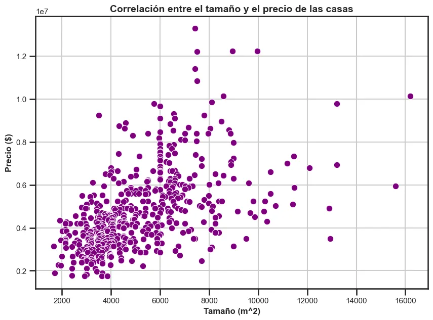
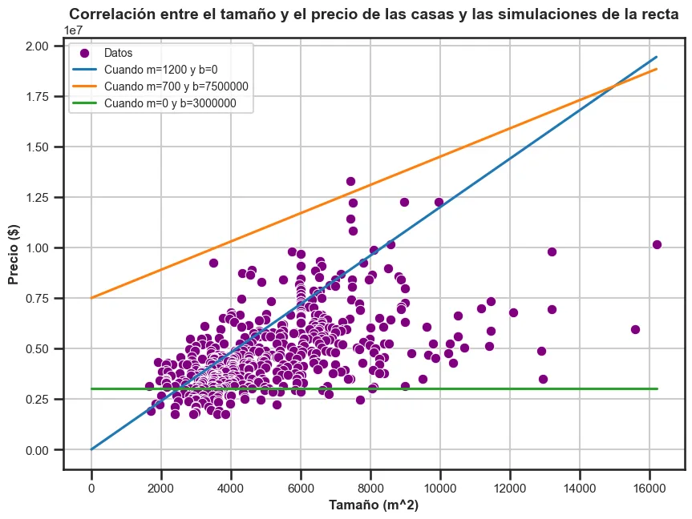
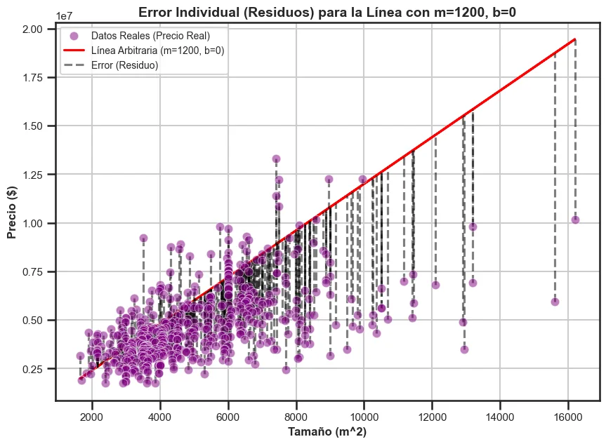
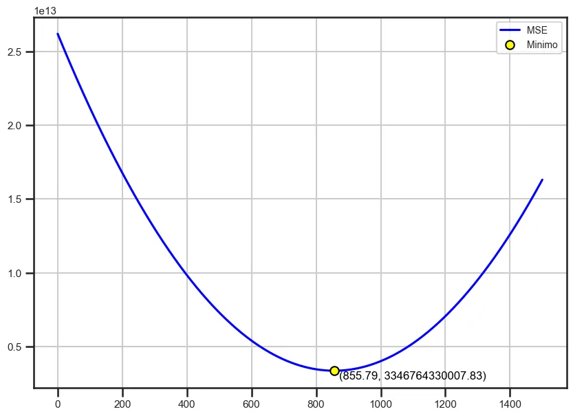
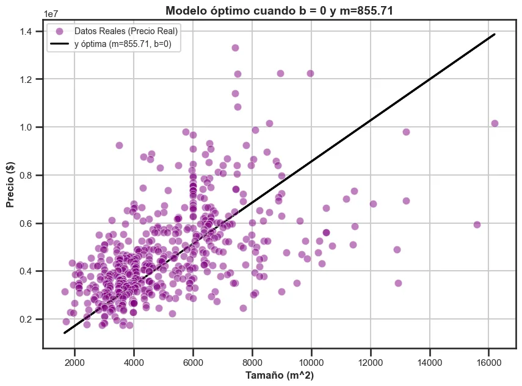

Proyecto · Machine Learning
¡Hoy vas a entender la regresión lineal!
Entender la regresión lineal tanto a nivel lógico-matemático como a nivel de programación es indispensable para todo aquel que, como yo, busque entender modelos de Machine Learning más complejos. Por eso me propuse explicar(me) esta técnica, y de paso que tú también puedas empezar a usarla.
- Python
- pandas
- NumPy
- seaborn
- matplotlib
- Cálculo
- casas analizadas
- 545
- pendiente óptima
- m* = 855.71
- ajuste del modelo
- R² = 0.041
Introducción: el precio de las casas
Con el boom de la Inteligencia Artificial y los datos, encontrar patrones se ha vuelto fundamental: predecir nuestras ventas en función de la inversión en marketing, o explicar los salarios en función de las horas de estudio. Para ese tipo de problemas hay una herramienta fundamental: la regresión lineal simple.
Usé un dataset muy famoso de Kaggle con precios de casas y sus características (tamaño, habitaciones, baños…). La meta: estimar el precio de una casa (y) a partir de una sola característica, el tamaño (x), que elegí por su alta correlación con el precio.

1. Todo surge a partir de la recta
Es sorprendente que todo nazca de una ecuación "simple":
ŷ = m·x + b
Donde ŷ es el precio estimado, m es la pendiente (la inclinación de la recta) y b es el intercepto, que en este caso podríamos llamar el precio base. El problema es que m y b pueden tomar cualquier valor…

2. ¿Cómo sabemos que nuestra línea es adecuada?
Aquí entra el error individual o residuo: la distancia vertical entre el dato real y el dato predicho. Si solo sumamos los errores, los positivos y negativos se cancelan. La solución: elevarlos al cuadrado, lo que además "penaliza" los errores grandes y hace la función más amigable para derivar.

Si promediamos esos errores al cuadrado obtenemos el famoso error cuadrático medio, la métrica que buscaremos minimizar:
MSE = (1/n) · Σ (yᵢ − ŷᵢ)²
3. ¿Cómo encuentro la mejor línea? Usemos la magia del cálculo 🚀
Para entender la optimización hice una simplificación: igualar b = 0. Sé que no va de acuerdo a la realidad (ninguna casa cuesta cero), pero así solo hay que optimizar un parámetro. Derivando el MSE con la regla de la cadena, igualando a cero y despejando, llegamos a:
m* = Σ xᵢyᵢ / Σ xᵢ² ≈ 855.71
Y como bonus, lo comprobé gráficamente: el valle de la curva del MSE cae justo en ese valor. ⭐

4. ¿Cómo sabemos qué tan buena es nuestra predicción?
Comparando el error de nuestro modelo con el error de usar solamente el promedio. Esa relación es el coeficiente de determinación:
R² = 1 − SSE / SST
Si R² ≈ 1, vale la pena usar nuestro modelo; si es menor a 0, sería mejor usar la media. Obtuve un R² = 0.041, casi cero. ¿Por qué? Porque forzamos a la recta a pasar por el cero, y el precio base real de una casa nunca es cero.

¿Qué aprendí?
Este proyecto me permitió entender la regresión lineal simple desde la relación entre dos variables hasta la derivación analítica para minimizar el MSE. Simplificar el modelo tuvo sus límites: si lo robusteciera buscando b* y agregando más variables x, podría conseguir mejores resultados. ¡Ese es el siguiente paso!
Me siento muy emocionado y orgulloso de compartir este notebook, que me llevó a entender conceptos angulares para el Machine Learning que, estoy seguro, serán clave para modelos más complejos.